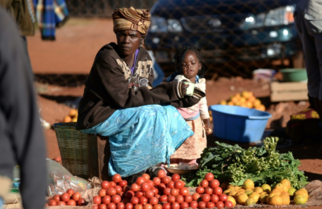

What is This Issue?
Not every poor person is hungry, but almost all hungry people are poor. The world does not produce enough food to feed everyone. Millions live with hunger and malnourishment because they simply cannot afford to buy enough food, cannot afford nutritious foods or cannot afford the farming supplies they need to grow enough good food of their own.